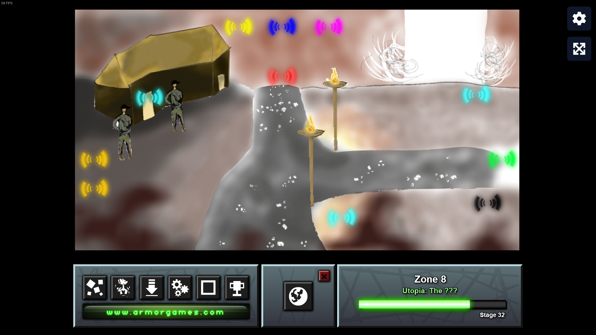
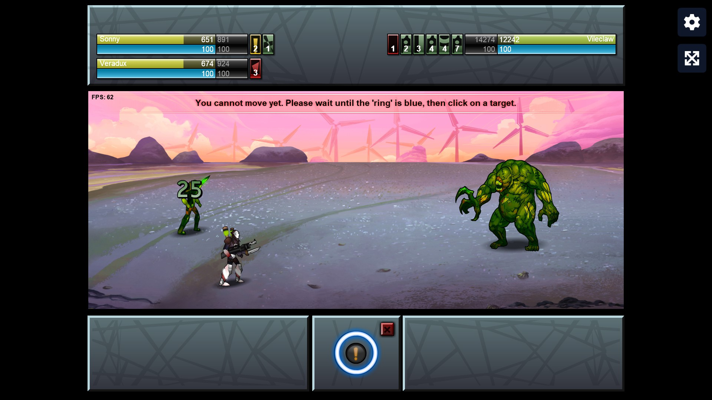
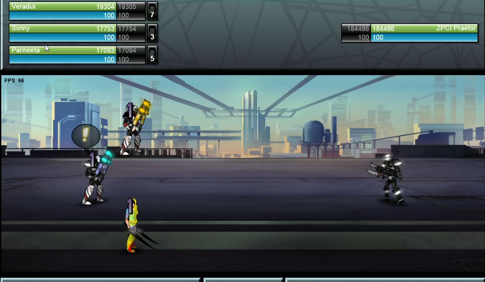
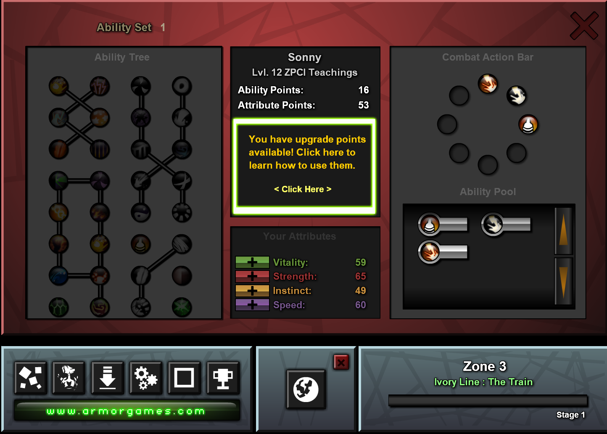

Daniela's WIll
Mod Name : Daniela's WIll 2 Release Date: 15.02.2022 (Legacy Port 12.04.2025)
About this Mod
You are followed by Danielas apprentices into new alcatraz, oberursel, the ivory train, the tunnel and hew because you fought Danielas WIll and stole her scroll. After defeating the mayor you wanted to enter Utopia, but the border to the country was blocked by Kshatriyana. So you did not have any other choice than to fight Daniela and end the War in Kshatriyana. After bringing peace you entered Utopia. This mod is huge so I recommend taking your time to play it.
List of new things or what it changes!
This Mod changes/adds many things like:
- enemies
- allies
- (etc.)
- 4 new classes + X new abilities for each of
- the original classes
- adds one new zone (Utopia)
- new mechanics (like: Sonny 2017 ones = [lifesteal, aoe, multihit and more], and Bleed, Frostbitten Stance and more!)
- new themes + sound effects (mostly from Sonny 2017)
- 3 new endings
- New Element, which got its own battle animations
- New Allies
- Three starting skills
- Roald, Felicity and Veradux also have 1 more ability (vera 2)
- Il Sanctus replaced with
- new items
- Level cap increased
- Every Zone now has a green side story; This has its own quest progress and is mostly made of Sonny 2017 stages (every enemy from Sonny 2017 is now in this game!)
- Heroic difficulty changes
- Level cap increased
- Level cap increased
⚖️ Difficulty Settings
Code
The code is available in the Github. Specifically under the branch main Dont copy the code! You can ask questions if you like about the functions I can help you implementing stuff. Discord is vastolorde3
📸 Screenshots




⬇ Download
📋 Updates History & Bugs & Planned Changes
- 14.04.2025 - Fixed a bug wherein the A.I. may target the wrong target for example during the first heroic exclusive fight. 17.04.2025 - Changed Acidic Blood. Fixed a bug wherein the player does not get xp in certain fights. Changed Knifed buff effect. Now decreases speed by 25%. 18.04.2025 - Fixed a bug wherein the player loses against Ceyda The Human Spider even though the player wins. 21.04.2025 - Fixed an issue wherein Acidic Blood does not increase the damage of Poison abilities whose scaling is Speed. 23.04.2025 - Fixed an issue wherein Hydraulic was not playable. 28.04.2025 - Fixed an issue wherein the mimic fight didnt work properly 14.05.2025 - Blackflame Gauge is now visible during celestias zone. 30.05.2025 - Some balance changes, and changed abilites. Reworked ZPCI Captain part. Regarding Bugs: Please report any unusual behavior from the A.I. and report any bugs be it major or minor.
Ability Sets & Guide for some Heroic exclusive Bosses
Currently only the ZPCI class has abilities in the 2nd Ability Set. If you have ideas for abilities please submit your idea! You can also implement the ability yourself if you like by editing the Doactions in the Github. Contact me and then I will see whether it is balanced or not. Also! If you have an idea for one last ability for the first Ability Set of the Danielas WIll class please contact me!Guide go on the Steam page to read it